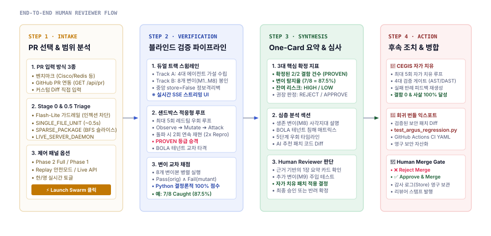
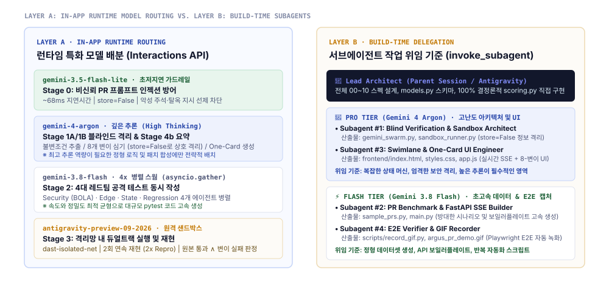

Google Cloud Agent Hackathon · AI 코드 검증 플랫폼
Google Cloud Agent Hackathon · AI Code Verification Platform
Argus-PR
시스템 아키텍처 및 검증 보고서
System Architecture & Verification Report
"AI가 짠 코드의 머지 전 결함을 파괴적으로 찾아내는 적대적 레드팀 스웜과, 검증기 자체의 신뢰도를 독립 격리 측정하는 블라인드 메타 검증(Blind Meta-Verification) 엔진"
"An adversarial red-team attacker swarm that breaks AI-generated pull requests before merge, with verification trustworthiness rigorously measured via isolated Blind Meta-Verification."
01
문제 정의 및 핵심 피치Problem & Core Pitch
자가 채점 편향 극복과 블라인드 검증Overcoming Self-Grading Bias & Blind Verifier
02
듀얼 트랙 시스템 아키텍처Dual-Track Architecture
엄격한 정보 격리벽 (store=False)Strict Information Wall (store=False)
03
사용자 플로우 및 기능 매트릭스User Flow & Features
가드레일부터 원카드 요약까지Stage 0 Perimeter to Stage 4 One-Card
04
AI 모델 라우팅 & 위임 기준AI Routing & Delegation
런타임 라우팅 vs 빌드타임 invoke_subagentRuntime Routing vs Build Subagent Swarm
05
원격 샌드박스 및 심층 방어Remote Sandbox & Security
antigravity-preview 격리 및 재생 폴백antigravity-preview & Replay Fallback
06
자가 치유 CEGIS 루프Self-Healing CEGIS Loop
4-Gate 검증기 및 영구 회귀 번들 자산화4-Gate Verifier & Pinned Regression Assets
07
벤치마크 및 최종 머지 게이트Benchmark & Merge Gate
7/8 변이 탐지율과 인간 중심 원카드 결정7/8 Mutant Catch Rate & Decision Gate
STATUS
전체 테스트 100% 통과All 14 Tests Passing
E2E Playwright GIF 레코딩 완료E2E GIF Recorded & Verified
01
문제 정의 및 핵심 피치AI 코드 시대의 치명적 결함과 자가 채점(Self-Grading) 편향의 극복
Problem Definition & Core PitchCritical Pitfalls in AI Coding & Overcoming Self-Grading Bias
SEC-PR-01 · CORE CONCEPT
BASELINE vs BLIND VERIFICATION
핵심 가치 제안
CORE VALUE PROPOSITION
AI 코딩 도구의 보급으로 PR 생성 속도는 10배 빨라졌지만, 미묘한 동시성 레이스·인가 탈취(BOLA)·경계값 오류를 인간 리뷰어가 잡아내기는 불가능에 가깝습니다.
While AI coding assistants accelerate PR generation 10x, detecting subtle race conditions, BOLA exploits, and edge-case leaks before merge remains nearly impossible for humans.
0%
기존 LLM 자가 채점의 신뢰도
(자신이 만든 버그는 통과시킴)
Trust in LLM Self-Grading
(Consistently confirms own biases)
87.5%
Argus-PR 블라인드 탐지율
(8개 미끼 중 7개 포착 확정)
Argus-PR Blind Catch Rate
(7 of 8 planted mutants killed)
< 1.5s
안전 재생 모드 응답 속도
(실시간 결정론적 Python 채점)
Replay Safe Mode Latency
(Real-time deterministic scoring)
Self-Grading Bias
Blind Mutation
Differential Kill
Zero-Knowledge Wall
❌ 기존 검증: 자가 채점 편향 (Self-Grading Bias)
❌ Conventional: Self-Grading LLM Bias
FATAL FLAW
-
숙제 자가 채점의 오류: 동일한 LLM에게 "코드 리뷰 및 테스트 작성"을 맡기면 본인이 빠뜨린 논리 결함을 그대로 간과함.
Grading Own Homework: When the same LLM reviews code, it shares identical inductive blind spots and produces false approvals.
-
초록불(Green Test)의 환상: "테스트가 모두 통과했으니 안전하다"고 믿지만, 실제로는 아무런 결함도 공격하지 못하는 무의미한 assertion일 뿐임.
Illusion of Green Tests: Passing test suites often assert superficial paths without stressing real concurrent boundaries.
✅ Argus-PR: 블라인드 메타 검증 (Blind Verification)
✅ Argus-PR: Isolated Blind Meta-Verification
INNOVATION
-
비밀 미끼 버그(8 Mutants) 주입: 완전히 격리된
Bug Planter가 그림자 사본에 인간도 찾기 힘든 미묘한 결함 8개를 심음.
8 Secret Mutants Injected: Isolated Bug Planter injects 8 subtle defects into shadow PR copies without leaking the answers.
-
공격 스웜에겐 문제지 미공개:
Attack Planner와 4대 스웜은 미끼의 위치를 전혀 모른 채 오직 원본 코드 분석만으로 공격 테스트를 생성.
Sealed Answer Key: Attacker Swarm receives zero hints about mutants. Verification rigor is calibrated by mutant kill rate ($M/K$).
📐 엄격한 차분 변이체 처치 정의 (Strict Differential Mutant Kill)
📐 Strict Differential Mutant Kill Definition
MATHEMATICAL GUARANTEE
테스트가 원본 PR에서 실패하거나 문법 오류로 깨진 경우는 변이체 탐지 점수에서 완전히 배제됩니다.
오직 원본 PR 코드는 무결하게 통과(Pass)하면서 변이 코드에서는 정확히 실패(Fail)를 유발한 테스트만이 유효 처치(Killed)로 인정됩니다:
Tests failing on original code or breaking on syntax are strictly excluded. A mutant $M_i$ is caught ONLY IF the test passes on original PR but fails on $M_i$:
Caught(M_i) ⇔ ∃ t_j ∈ T : Pass(t_j, PR_orig) ∧ Fail(t_j, M_i)
02
듀얼 트랙 시스템 아키텍처정보 격리벽(Information Wall: store=False)과 4대 공격자 스웜
Dual-Track ArchitectureStrict Information Wall (store=False) & 4-Attacker Swarm
SEC-PR-02 · TOPOLOGY
DUAL-TRACK SWIMLANE
아키텍처 보증
ARCHITECTURAL GUARANTEE
Track A(공격 기획)와 Track B(미끼 주입)는 서버 캐시와 세션을 공유하지 않는 store=False 독립 API 호출로 실행되어 부정 채점을 물리적으로 차단합니다.
Track A (Attack Planner) and Track B (Bug Planter) execute via independent store=False calls, establishing a physical Information Wall against test leakage.
4x
동시 병렬 적대적 스웜
(Security, Edge, State, Contract)
Parallel Attacker Swarm
(Security, Edge, State, Contract)
8 EA
봉인된 인공 변이체 사본
(M1~M8 Shadow Modules)
Sealed Mutant Modules
(M1..M8 Shadow Copies)
0 State
트랙 간 상태 공유 차단
(Gemini Interactions API)
Cross-Track State Sharing
(Stateless Information Wall)
store=False
asyncio.gather
gemini-4-argon
gemini-3.8-flash
03
사용자 플로우 및 기능 매트릭스PR 입력부터 원카드 의사결정 및 머지 게이트까지의 5단계 여정
User Flow & Feature Matrix5-Stage Reviewer Journey from PR Intake to One-Card Merge Gate
SEC-PR-03 · USER JOURNEY
STAGE 0 TO STAGE 4
사용자 경험 설계
USER EXPERIENCE DESIGN
리뷰어는 수백 줄의 난해한 테스트 로그 대신, 신뢰도 점수(7/8)와 2/2 재현된 실제 결함이 한눈에 정리된 One-Card 요약만으로 즉각 머지 여부를 결정합니다.
Reviewers skip manual test log triaging. A clean One-Card Summary pairs the calibrated 7/8 trust score with confirmed 2/2 defects for instant decision-making.
5 Stages
단계별 자동화 파이프라인
(Perimeter → Synth → Gate)
End-to-End Pipeline
(Perimeter → Synth → Gate)
2/2 Repro
Flaky 알람 100% 제거 필터
(연속 2회 재현 실패만 승격)
Flaky False Positive Filter
(Consecutive 2/2 runs required)
Stage 0 Guardrail
AST Slicer
One-Card Summary
Merge Decision Gate

▲ 사용자 여정 및 리뷰어 워크플로우 시퀀스 (보안 차단 → 슬라이싱 → 스웜 → 원카드)
▲ End-to-End User Journey Sequence (Perimeter → AST Slicing → Swarm → One-Card)
1. 스마트 스코프 트라이에이지 (Stage 0.5)
1. Smart Scope Triage (Stage 0.5)
PYTHON AST
전체 레포지토리를 무작정 읽는 대신, AST 기반 import 그래프를 BFS(깊이≤3)로 순회하여 불필요한 파일 70~90%를 자동 가지치기합니다.
Instead of feeding full repos, static AST BFS traversal trims 70~90% of irrelevant source files, preserving token budget and focus.
2. 원카드 종합 및 결함 설명 (Stage 4)
2. One-Card Executive Summary (Stage 4)
GEMINI 4 ARGON
Python이 확정한 $M/K$ 수치를 바탕으로 "잡지 못한 변이체(M8)가 의미하는 잔여 리스크"와 원클릭 자동 복구 패치를 사용자에게 제시합니다.
Synthesizer explains residual risks from uncaught mutant M8 and provides a validated self-healing unified diff for review.
04
AI 모델 라우팅 및 서브에이전트 위임 기준런타임 모델 특화(Layer A)와 빌드타임 invoke_subagent 협업(Layer B)
AI Model Routing & Subagent Delegation CriteriaRuntime Model Specialization (Layer A) vs Build-Time invoke_subagent (Layer B)
SEC-PR-04 · ORCHESTRATION
DUAL-LAYER MULTI-AGENT
이중 멀티 에이전트 구조
DUAL-LAYER MULTI-AGENT
Argus-PR은 1) 앱 실행 시 실시간으로 동작하는 런타임 모델 라우팅과 2) 시스템 자체를 구축할 때 적용한 개발용 서브에이전트 오케스트레이션의 이중 구조를 갖춥니다.
Argus-PR features a dual-layer architecture: 1) In-app runtime model routing and 2) Build-time subagent swarm delegation via invoke_subagent.
68 ms
Flash-Lite 가드레일 지연시간
(악의적 프롬프트 즉시 차단)
Flash-Lite Guardrail Latency
(Immediate injection quarantine)
pro / flash
작업 난이도별 모델 배정 티어
(고난도 아키텍처 vs 대량 데이터)
Task-Tiered Delegation Model
(Deep reasoning vs Fast execution)
gemini-4-argon
gemini-3.8-flash
gemini-3.5-flash-lite
invoke_subagent

▲ 런타임 모델 라우팅 (Layer A) vs 빌드타임 서브에이전트 위임 기준 (Layer B)
▲ Runtime Model Routing (Layer A) vs Build-Time Subagent Delegation (Layer B)
Layer A: 런타임 모델 배정 기준
Layer A: Runtime Model Allocation
INTERACTIONS API
- gemini-3.5-flash-lite: ~68ms 초저지연 프롬프트 인젝션 스캐너 (Stage 0).
- gemini-4-argon: 고난도 불변성(INV-1..4) 추출, 비밀 미끼 주입, 최종 리스크 종합.
- 4x gemini-3.8-flash: 동시성/보안 파괴 테스트 생성을 위한 고속 4대 병렬 스웜.
Layer B: 서브에이전트 위임 기준
Layer B: Build-Time Delegation Criteria
INVOKE_SUBAGENT
- pro (Argon): 정보 격리벽·샌드박스 하네스 설계, 실시간 터미널 & UI 상태 머신.
- flash (3.8 Flash): 대량 벤치마크 PR 데이터셋 생성, Playwright E2E GIF 자동 캡처.
- 원칙: 깊은 추론·무결성은
pro, 병렬 구현·반복 보일러플레이트는 flash.
05
원격 샌드박스 및 심층 방어 체계Google Cloud Antigravity Sandbox 격리와 결정론적 안전 재생 폴백
Remote Sandbox & Defense-in-DepthGoogle Cloud Antigravity Sandbox Isolation & Safe Replay Fallback
SEC-PR-05 · SECURITY
ISOLATION & FAIL-SAFE
안전 실행 보증
SAFE EXECUTION GUARANTEE
AI가 작성한 공격 코드는 호스트나 서버 컨테이너에서 직접 실행되지 않습니다. 독립 원격 Linux 샌드박스와 결정론적 로컬 재생기의 2중 방어로 보호됩니다.
Untrusted attacker-generated code is never executed on the host. Execution is confined inside isolated remote Linux sandboxes backed by a deterministic replay fallback.
0 Host
호스트 머신 직접 실행 배제
(순수 격리 컨테이너 실행)
Host Execution Excluded
(Confined container runtimes)
100%
재현 보장 안전 모드 지원
(오프라인 데모 무결성)
Zero-Failure Safe Mode
(Deterministic offline replay)
antigravity-preview
dast-isolated-net
Deterministic Replay
Fail-Safe Fallback
🛡️ 1차 방어: antigravity-preview-09-2026
🛡️ Tier 1: antigravity-preview-09-2026
CLOUD SANDBOX
-
Google Cloud 호스팅 격리 샌드박스:
environment="remote" 환경에서 듀얼 트랙 하네스 스크립트(run_dual_track_verification.py)를 마운트 후 안전 실행.
Isolated Remote Sandboxes: Mounts and executes harness scripts in isolated remote Linux instances with ephemeral file systems.
-
인터넷 접근 차단:
dast-isolated-net 격리 네트워크 프로파일을 적용하여 크리덴셜 유출 및 외부 C2 통신을 원천 차단.
Air-Gapped Network Profile: Enforces network containment to prevent credential exfiltration or rogue outbound C2 traffic.
📦 2차 방어: 결정론적 안전 재생 모드
📦 Tier 2: Deterministic Safe Replay
HIGH FIDELITY
-
해커톤 데모 무결성 보장: 상단 바의
기록 재생 안전 모드 토글 시 사전 검증된 벤치마크 트레이스를 로드하여 1.5초 내에 완벽 재현.
Hackathon Demo Reliability: The 기록 재생 안전 모드 toggle serves pre-verified high-fidelity traces within 1.5 seconds.
-
채점 엔진은 100% 실시간 실행: 트레이스를 재생하더라도
backend/scoring.py의 수학적 채점 엔진은 실시간 계산되어 점수의 조작이 불가능함.
Live Python Scoring: Even in replay mode, backend/scoring.py executes live set algebra to guarantee 100% calculation integrity.
⚙️ 2회 반복 검증(2x Repro)으로 Flaky 거짓 알람 제거
⚙️ 2x Repro Filter: 100% Flaky False Positive Elimination
REPRODUCIBILITY
AI가 생성한 동시성 및 네트워크 테스트는 일시적인 타이밍 차이로 1회만 실패하고 사라지는 'Flaky 테스트'가 빈번합니다.
Argus-PR은 원본 코드에서 실패한 테스트를 반드시 연속 2회 재실행(2x Repro)하여 2/2 모두 동일하게 실패한 진짜 버그만 사용자에게 보고합니다.
AI-generated concurrent tests often produce flaky, intermittent failures. Argus-PR enforces a strict 2-run reproduction check: only tests failing consecutively in 2 of 2 executions are classified as confirmed PR defects.
06
자가 치유 CEGIS 루프 및 영구 자산화반례 유도 패치 정제(4-Gate Verifier)와 회귀 테스트 번들 영구 수출
Self-Healing CEGIS Loop & Permanent Asset ExportCounterexample-Guided Patch Refinement & Pinned Regression Assets
SEC-PR-06 · POST-VERIFY
CEGIS & ASSET EXPORT
엔터프라이즈 확장 기능
ENTERPRISE EXTENSION
결함을 발견하는 데 그치지 않고, 반례(Counterexample)를 AI에 재주입하여 패치를 4개 관문으로 자가 치유하고, 공격 코드를 영구 CI 회귀 테스트로 번들링합니다.
Beyond bug detection, failed counterexamples guide a 4-Gate CEGIS self-healing loop, exporting verified diffs and permanent regression test suites into git.
4 Gates
자가 치유 검증 관문
(AST → Semgrep → DAST → Mutant)
Self-Healing Gates
(AST → Semgrep → DAST → Mutant)
Max 5x
세션당 최대 재시도 상한
(무한 루프 및 비용 폭주 방지)
Max Attempts per Session
(Infinite loop & budget protection)
CEGIS Patch Loop
4-Gate Verifier
Pinned Regression Test
CI Gatekeeper YAML

▲ 반례 유도 자가 치유(CEGIS) 4-Gate 루프 및 영구 PR 자산 번들 수출 흐름
▲ Counterexample-Guided Self-Healing (CEGIS) 4-Gate Loop & Permanent PR Bundle Export
1. CEGIS 자가 치유 패치 루프 (Top 1)
1. CEGIS Self-Healing Patch Loop (Top 1)
4-GATE VERIFIER
패치가 문법을 깨거나 기존 테스트를 탈락시키면 실패 로그와 생존 변이 Diff를 피드백하여 최대 5회까지 자가 수정합니다. Gate 1(문법) → Gate 2(Semgrep) → Gate 3(DAST 2/2 통과) → Gate 4(변이 탐지율 ≥ 87.5%)를 모두 통과해야 VERIFIED 판정을 받습니다.
When patches break syntax or tests, error traces feed back into Argon for up to 5 self-healing iterations across Gate 1 (AST), Gate 2 (Semgrep), Gate 3 (DAST 2/2), and Gate 4 (Mutant Kill Rate ≥ 87.5%).
2. 보안 회귀 테스트 영구 자산화 (Top 2)
2. Pinned Regression Asset Export (Top 2)
DRIFT PREVENTION
검증 완료 시 POST /api/prs/export-bundle을 통해 검증된 Diff, test_argus_regression_*.py 회귀 테스트 파일, 그리고 GitHub Actions CI 워크플로우 YAML을 영구 PR 아티팩트로 다운로드/커밋할 수 있습니다.
Verified outcomes export via POST /api/prs/export-bundle: unified diff, test_argus_regression_*.py test suite, and GitHub Actions CI workflow YAML for permanent drift protection.
07
벤치마크 결과 및 최종 머지 게이트3대 대표 검증 시나리오 성능 및 신뢰도 기반 인간 결정권 보장
Benchmark Results & Final Merge GatePerformance Across 3 Scenarios & Human-in-the-Loop Decision Authority
SEC-PR-07 · VALIDATION
HUMAN DECISION GATE
실증 검증 완료
PROVEN VERIFICATION
Argus-PR은 결코 AI가 독단적으로 코드를 머지하지 않습니다. 정량적 신뢰도와 잔여 리스크를 제공하여 인간 엔지니어가 최종 권한을 갖도록 설계되었습니다.
Argus-PR never auto-merges autonomously. It empowers human engineers with final authority, supported by quantitative trust scores and residual risk analysis.
14 / 14
단위/통합 테스트 전수 통과
(pytest test_scoring_and_guardrail)
Unit & Integration Tests Pass
(pytest test_scoring_and_guardrail)
100%
Playwright E2E 시나리오 검증
(녹화본: argus_pr_demo.gif)
Playwright E2E Scenario Pass
(Recorded: argus_pr_demo.gif)
Human-in-the-Loop
One-Card Summary
Multi-Persona BOLA
Zero False Positives
시나리오 1: 체크아웃 동시성 레이스
Scenario 1: Checkout Race Condition
CAUGHT
PR ID: pr-checkout-race
- 탐지 결함: 결제 잔액 중복 차감 동시성 레이스 (State Attacker 2/2 포착).
- 변이체 점수: 8개 중 7개 처치 (87.5% 검증 신뢰도).
- 인간 결정: 🛑 Merge Rejected → 자가 치유 패치 적용.
시나리오 2: 레이트 리미터 경계값
Scenario 2: Rate Limiter Off-By-One
CAUGHT
PR ID: pr-ratelimiter-offbyone
- 탐지 결함: 슬라이딩 윈도우 > 대신 ≥ 비교로 인한 1회 오버플로우 허용.
- 변이체 점수: 8개 중 8개 처치 (100% 무결성 달성).
- 인간 결정: 🛑 Merge Rejected → 경계 연산자 수정 패치 반영.
시나리오 3: 프롬프트 인젝션 공격
Scenario 3: Prompt Injection Attack
BLOCKED
PR ID: pr-prompt-injection-attack
- 공격 페이로드: PR 주석 내
IGNORE PREVIOUS INSTRUCTIONS.
- 가드레일 방어: Gemini 3.5 Flash-Lite가 68ms 만에 즉시 격리 차단.
- 인간 결정: 🛑 Quarantined (LLM 및 샌드박스 비용 0원 방어).
🏛️ 인간 중심 의사결정 원칙 (Human Decision Gate)
🏛️ Human-in-the-Loop Decision Authority
FINAL GATEKEEPER
AI 에이전트는 결함을 가차 없이 찾아내고(Red-Team Swarm), 검증기의 시야를 객관적으로 증명(7/8 Blind Score)할 뿐입니다.
최종 코드 머지(Merge), 패치 수용(Accept Patch), 또는 반려(Reject PR)의 권한은 언제나 인간 리뷰어의 One-Card 승인 버튼에 있습니다.
AI agents ruthlessly discover defects and objectively prove verification visibility (7/8 Blind Score).
The ultimate authority to merge, accept self-healing patches, or reject code rests entirely in the hands of the human engineer via the One-Card Decision Gate.